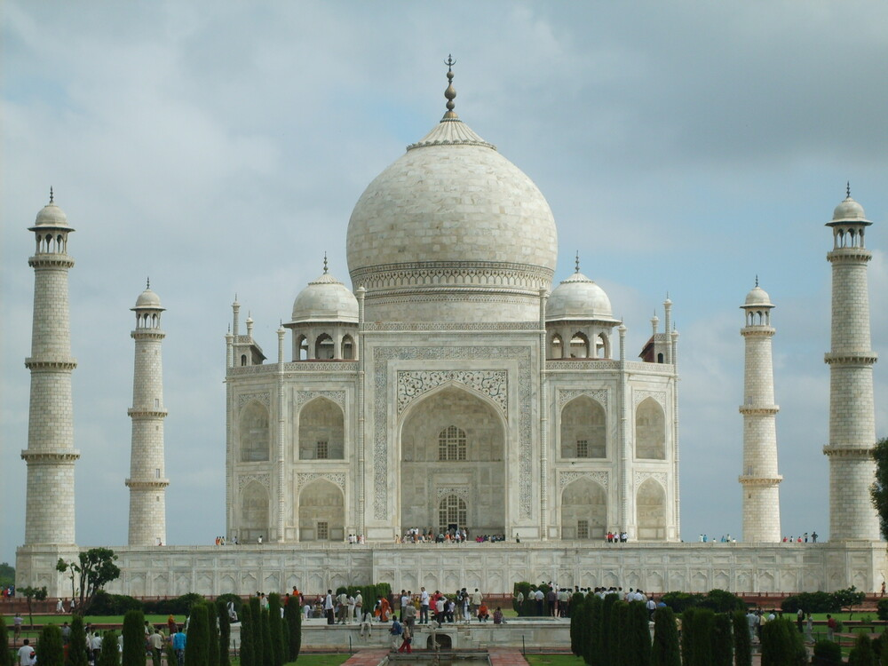
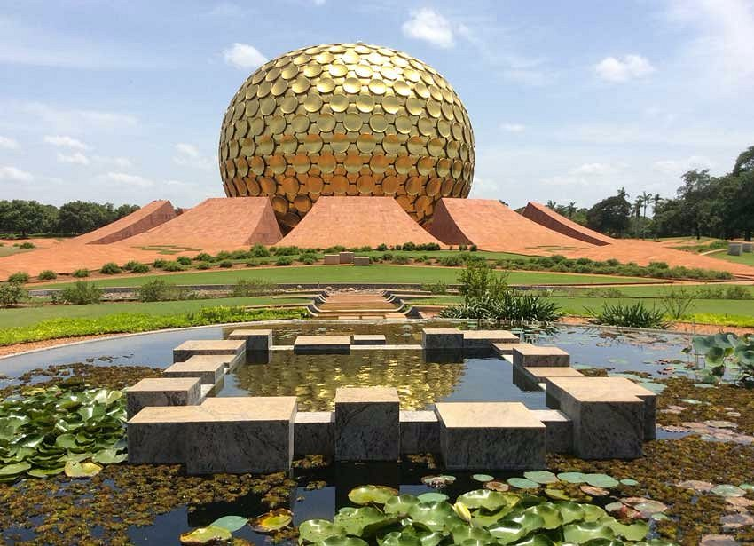
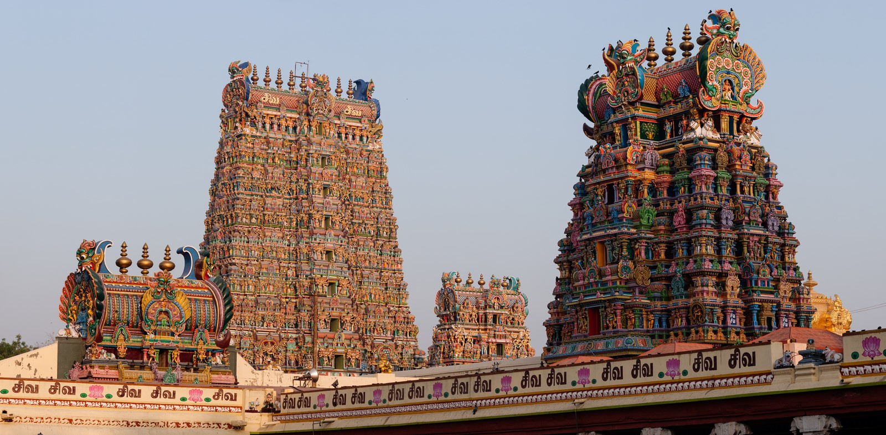
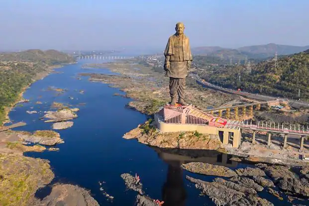
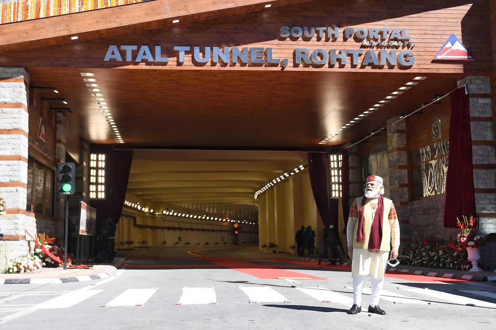

TAJMAHAL

An immense mausoleum of white marble, built in Agra between 1631 and 1648 by order of the Mughal emperor Shah Jahan in memory of his favourite wife, the Taj Mahal is the jewel of Muslim art in India and one of the universally admired masterpieces of the world's heritage.
Kailasa Temple at Ellora Caves

A Structural engineering wonder reminiscent of the prowess of the architects of 8th century India, the Kailasa Temple is part of the rock-hewn monastic cave temple complex, the world-famous, Ellora Caves. This massive Temple structure is believed to have been carved out of a single rock! The Kailasa Temple is an ideal example of Reverse Engineering and was chiseled using the top-down approach in construction. It is believed that three giant trenches were bored into a rock face and almost 2,00,000tonnes of rock would have been excavated to make the temple. It is the Kailasa Temple that houses the world’s largest cantilevered rock ceiling! The temple’s intricate sculptural design adds another flavor to its astounding complexity making it nothing short of an engineering marvel of ancient Indian Architecture.
Auroville Dome or Matrimandir

atrimandir, the Golden Globe in Auroville, is another fascinating example of engineering marvels of Indian Architecture. The Auroville Dome located in Puducherry, Tamil Nadu is also known as the Temple of the Mother and is an edifice of spiritual significance to yoga and meditation enthusiasts. Matrimandir is a gigantic spherical structure built with twelve giant petals and shining golden discs that reflect the sunlight and enhance the dome’s brilliant radiance. It is said that it took thirty-seven whole years to construct (1971-2008) this spectacle before it was finally made open to the public.
Meenakshi Amman Temple

The stupendous richness of Indian Architecture is showcased by the Meenakshi Amman Temple in Madurai, Tamil Nadu. This beautiful shrine is a heritage site and an important landmark of the region. The Meenakshi Temple is amongst the list of the most gigantic temples in India and has twelve enormous gates, with the largest gates placed on the outer walls. These gates are also known as Gopurams. The temple complex has a tank, besides the famous Hall of Thousand Pillars, an extraordinary spectacle. The temple halls are lavishly adorned with beautiful sculptures, designs, and carvings and are unique from each other. The Meenakshi Amman Temple complex spreads over 45 acres of space and is a popular tourist destination.
STATUE OF UNITY

The Statue of Unity is the world's tallest statue, with a height of 182 metres (597 feet), located near Kevadia in the state of Gujarat, India. It depicts Indian statesman and independence activist Vallabhbhai Patel (1875–1950), who was the first deputy prime minister and home minister of independent India and an adherent of Mahatma Gandhi. Patel is highly respected for his leadership in uniting 562 princely states of India to form the single Union of India. The statue is located in Gujarat on the Narmada River in the Kevadiya colony, facing the Sardar Sarovar Dam 100 kilometres (62 mi) southeast of the city of Vadodara.
The project was first announced in 2010, and construction started in October 2013 by Indian company Larsen & Toubro, with a total construction cost of ₹27 billion (US$422 million). It was designed by Indian sculptor Ram V. Sutar and was inaugurated by the Prime Minister of India, Narendra Modi, on 31 October 2018, the 143rd anniversary of Patel's birth.
ATAL TUNNEL

The 9.02-kilometre Atal Tunnel connects Manali to Lahaul-Spiti Valley in Himachal Pradesh, reducing the travel distance by 46 kilometres and time by 4-5 hours. Completed in 2020, it is named after former Prime Minister Atal Bihari Vajpayee and is a significant engineering achievement.